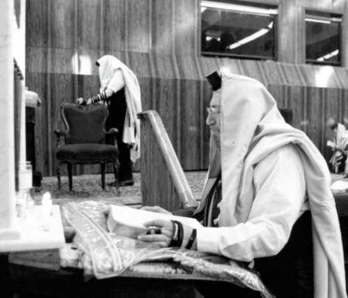

Leave Pittsburgh Before Shabbos!
Chazan R’ Moshe Teleshevsky a”h was a familiar figure in the Rebbe’s court, considering his having been granted the privilege of holding forth in the Rebbe’s presence on numerous occasions. R’ Moshe, who passed away on Sukkos, was a model of utter bittul to the Rebbe. * Years ago, I had the privileg

R’ Moshe didn’t deny it and after thinking for a while he said, “I don’t know. I can only guess that it’s because all my life I wished that everything I sang and davened to have meaning and not just be an opening of the mouth and letting out loud noise. Every stanza that I sang before the Rebbe was prepared and inspected after the requisite thought and preparation. Although I davened for the amud for many years, each time I was particular about having every part of the niggun connect to the words of the t’filla.”
That was R’ Moshe’s answer, but recently, in the book B’chol Beisi Ne’eman Hu about R’ Shneur Zalman Gurary, I read a story that might provide an additional reason for that special fondness that the Rebbe showed for him. The story reveals R’ Moshe’s hiskashrus and utter bittul to the Rebbe.
The Rebbe once told R’ Zalman in yechidus about the nachas he received from four Chassidim. One of the four was R’ Moshe Teleshevsky.
LEAVE PITTSBURGH BEFORE SHABBOS!
R’ Zalman Chanin heard the full story from R’ Moshe’s wife:
It was in the 50’s and R’ Moshe and his wife lived in Pittsburgh. R’ Moshe was a chazan in a local shul and Mrs. Teleshevsky worked as a teacher in the Jewish school.
R’ Moshe went to Crown Heights for Yud Shevat and decided to remain for yechidus that took place Thursday night. He told his wife, who asked him to report to her right after the yechidus.
R’ Moshe assumed he would have yechidus late at night and he said he would call in the morning, but his wife said she would be up late preparing for Shabbos in any case, so he could call.
R’ Moshe came out of the Rebbe’s room at 3:30 in the morning in an emotional turmoil. He called his wife and told her that during the yechidus the Rebbe told him to leave Pittsburgh immediately and move to Crown Heights, before Shabbos!
Since the distance between Pittsburgh and New York is a seven hour drive, R’ Moshe asked the Rebbe what he should do since there would not be enough time to drive to Pittsburgh and back to Crown Heights before Shabbos.
The Rebbe said to spend Shabbos in a hotel, but he must leave the house before Shabbos. He could come to Crown Heights after Shabbos.
“What shall I do with all our belongings? When should I pack them?” asked R’ Moshe.
The Rebbe said, “Ask your friends there to take care of it.”
R’ Moshe told his wife this shocking order from the Rebbe, but she was sleepy and the urgency of the matter did not register.
It was the next morning, when R’ Moshe arrived in Pittsburgh and repeated what the Rebbe said, that the Rebbe’s instructions sank in. She did not ask questions. After packing her personal belongings, she left the house with her husband and they went to a local hotel.
On their way to the hotel, R’ Moshe called the president of the k’hilla to inform him that he would not be there on Shabbos. He did not know how to explain the fact that he was leaving the city and his position for good. He merely said that due to an emergency, he could not make it for Shabbos.
On Motzaei Shabbos, they drove to Crown Heights and stayed with relatives. They had no idea what their next move should be. They were both bewildered. They had left their home and good jobs and had come to the unknown.
After a day or two, R’ Chadakov asked R’ Moshe’s wife to come to the office. When she arrived, he told her that the Rebbe wanted to see her. She wasn’t prepared for this and she asked whether she could go in later, after she had prepared somewhat. He told her that the Rebbe said she should enter immediately.
When she entered the Rebbe’s room, she was utterly confused and did not know what to say. She stood there silently. The atmosphere was tense until the Rebbe smiled broadly, which encouraged her somewhat. Then she asked, “What should I tell my parents when they ask me why I suddenly left everything for no reason?”
The Rebbe said, “Tell them that you left because I told you to leave. That’s enough.”
Until today, the mystery has not been solved. R’ Moshe and his wife never learned why the Rebbe told them to leave Pittsburgh, but as a faithful Chassid R’ Moshe obeyed the Rebbe.
The Rebbe told this story to R’ Zalman Gurary and said that R’ Moshe’s obedience, without any questions, gave him much nachas.
GO TO THE SHULS AND SAY “AMEN YEHEI SHMEI RABBA”
R’ Moshe Teleshevsky was born in 5687/1927 in Moscow. His father was R’ Mordechai Dov. His Chassidic bond with the Rebbe was something he developed from a young age. At the age of three he had his first yechidus.
“I still remember it,” R’ Moshe told me, over seventy years later. “My teacher, R’ Kaddish Romanov, brought the children in his class to the Rebbe for a bracha.”
Young Moshe had yechidus with the Rebbe Rayatz five times. His second yechidus was when he was nine and in Riga.
“My grandfather, R’ Menachem Mendel Teleshevsky, had yechidus and I went with him. I received a bracha from the Rebbe again.”
R’ Moshe attributed his survival during the war due to the following yechidus:
“About a year before the war began, I had yechidus and the Rebbe gently asked me, ‘Do you learn?’ My grandfather answered for me, ‘No. He does not learn.’ The Rebbe thought a bit and then told me to go to shuls and battei midrash and to answer, ‘Amen, Yehei Shmei Rabba’ with all my might. Since the Rebbe told me to do this, I did as I was told.
“Later on, I learned the maamer Chazal that says that whoever responds with ‘Amen Yehei Shmei Rabba’ with all his might, his evil decrees are torn up. Rashi says that ‘with all his might’ means with all his kavana, concentration, while Tosafos says it means in a loud voice. That’s when I realized the meaning of the Rebbe’s instruction to me.
“Before the war began, my parents lived in Helsinki, Finland while my sister and I were sent to the Talmud Torah called ‘Torah V’Derech Eretz’ in Riga, which was under R’ Chadakov. When the war began, I was able to leave Riga on the last train and the last ship for Helsinki, before the Russians invaded Riga. A week after the Russians invaded Riga it was no longer possible to leave. I attribute my being able to leave on the last train to the evil decree being torn up.”
Young Moshe remained in Helsinki for the rest of the war years. During this time, he experienced another miracle when he was severely injured in an accident and was in a coma for a long time. When he miraculously recovered, he recalled the Rebbe’s instruction to him to say “Amen Yehei Shmei Rabba” and felt sure that this is what saved him again.
In 1946 he went with his family to the United States where the Rebbe Rayatz was already living. The trip took a week by ship. R’ Moshe learned in 770.
THE REBBE RAYATZ APPROVES THREE HOURS A DAY FOR CHAZANUS
R’ Moshe’s voice was unique from when he was a boy. He inherited this from his father who was a chazan in Helsinki. While he was still in Europe, many listened in wonder to R’ Moshe’ voice, but he did nothing to develop his talent. It was only upon arriving in America that experts heard him sing and predicted great things for him and urged him to develop his voice.
He began going three times a week to Manhattan for voice lessons. Of course, each time, this took away from his learning in yeshiva. The hanhala was not happy with his absences and upon consulting with his father, they wrote a letter to the Rebbe Rayatz about this. He even had to sign to this letter.
“You can imagine how I felt. First of all, the embarrassment in that the Rebbe would know about my missing yeshiva. Second, chazanus was essential to me and I was upset by the mere thought of having to give it up. But whatever the Rebbe would say, I would do; there was no question about that.
“A response from the Rebbe arrived two or three days later. I tensely read through the letter. The Rebbe wrote, ‘In response to your question about the advice of experts in singing, it is proper that you go to the top in this field. With permission from the hanhala of Tomchei T’mimim Lubavitch, you will be involved in this study for three hours a day, and consistently lead the prayers in shuls on weekdays and Shabbos for various t’fillos. Half your earnings you should give, bli neder, to Tomchei T’mimim Lubavitch and to Merkos L’Inyanei Chinuch. May Hashem grant you success, materially and spiritually.’
“Naturally, after being apprised of the Rebbe’s position, the hanhala made peace with it and allowed me even more time to devote to my singing than I had taken up until then. So it worked out quite well for me.”
Throughout the day, R’ Moshe sat in the small zal of 770 and learned in R’ Mentlick’s class. He was a Tamim, a Yerei Shamayim, dignified looking with a pleasant demeanor. He was only 22 at the time and a new immigrant when he was asked to be the main chazan on the Yomim Nora’im in the Young Israel shul in Crown Heights. It was a huge shul with 800 members. He wasn’t sure whether he should accept the position, thinking he wasn’t up to such a responsibility. The hanhala of the yeshiva wasn’t thrilled with the idea either. He wrote to the Rebbe Rayatz and two days later he received an answer. He should accept the offer.
Why did such a prestigious shul take such a young chazan? R’ Moshe explained:
“It was different back then. In those days in Crown Heights, and in Brooklyn in general, there were numerous shuls but few professional chazanim. This was because, due to the war, additional chazanim did not come from Europe. There weren’t enough chazanim to go around.”
So Moshe Teleshevsky became a chazan in a big shul. He remembers the sum that he received as a salary that he split with Tomchei T’mimim.
“I received $1000 for the t’fillos throughout the Yomim Tovim. In those days, that was an enormous sum.”
A few days after he received the Rebbe’s letter, he went to the room of Ramash [the Rebbe MH”M, whose room was open in those days to whoever wanted to see him] and showed him the letter. R’ Moshe remembers the scene:
“He got up and read the letter with great seriousness, twice and three times. Then I asked him whether dividing the money was something I always had to do or only for that year. He thought a moment and said that it was only for that year.
“That wasn’t just any question and answer. It was the Rebbe Rayatz who made me a shliach tzibbur and the Rebbe understood this from the letter. What the Rebbe Rayatz decided was, to the Rebbe, absolute and final.”
This is the reason that R’ Moshe attributes to his becoming the official chazan of the Rebbe. When the Rebbe said, “The shliach tzibbur is here,” everyone knew whom he meant.
TALKS WITH THE REBBE ABOUT CHAZANUS
R’ Moshe acquired his knowledge of chazanus, the theory and practice, with a lot of hard work and many years of study. “I devoted my life to this,” he said.
Chassidim never made a big deal about chazanus as other groups did, and yet Chazan R’ Moshe Teleshevsky received kiruvim from the Rebbe over the years.
R’ Teleshevsky often spoke to the Rebbe and they sometimes discussed the professional world of chazanus.
“We spoke about the topic of chazanus and my voice lessons. The Rebbe’s knowledge about the inside world of chazanus was astounding. Before the nesius, I would go to his room now and then and he would discuss various topics with me. He took an interest in my voice lessons.
“The Rebbe once explained to me the differences between the two approaches to voice development, the Italian and the German. The Italian method is the one that is accepted today and the one I was studying. It was only at the age of 50 that I began studying the German method which teaches how to preserve the voice when aging. I wondered how the Rebbe knew all this. He was aware of the minutest nuances of these methods, knowledge that only a first-class chazan knows after years in the profession.
“The next time I was astounded was the night of Simchas Torah when the Rebbe taught the niggun Shamil. A chazan who wants to be at his best needs to rest before singing and only then he can reach the octaves he wants to reach. This was after a long farbrengen and exhausting hakafos. After all that, the Rebbe began singing in a mezzo (half) voice.
“I was amazed by the power and his ability. The professional form was like that of veterans in the opera who studied voice lessons for years. As someone who was involved in voice training, I had the knowledge and was able to hear the small nuances in the niggun. I could not understand how the Rebbe did it.”
When I asked whether the Rebbe read musical notes, R’ Teleshevsky said, “I don’t know, but I’ll tell you a story. I once got a phone call from R’ Chadakov who told me that in the Seifer HaNiggunim, on a certain page, there is a niggun and he wanted me to sing it over the phone the next day at four o’clock. I realized that it was the Rebbe, not R’ Chadakov, who was interested in the niggun.
“Anash in Eretz Yisroel had taken the niggun and wanted to put the words of U’faratzta to it. They had written to the Rebbe that the niggun was in the Seifer HaNiggunim and the Rebbe wanted to hear it.
“The next day, R’ Chadakov called me at four o’clock. I was ready and I knew the Rebbe was listening on the line. After I finished singing, R’ Chadakov asked me to wait. A minute later he thanked me and hung up. He had asked the Rebbe whether I should sing it again. After some time, the song U’faratzta was publicized to the world.”
THE REBBE’S INVOLVEMENT IN NIGGUNEI NICHO’ACH
R’ Teleshevsky used his musical talents to preserve Chabad niggunim within the framework of Nicho’ach (Niggunei Chassidei Chabad). R’ Shmuel Zalmanov ran the organization. He arranged the niggunim and wrote them down with musical notes.
Some time after R’ Zalmanov’s passing, R’ Teleshevsky was summoned by R’ Chadakov, who told him that the Rebbe wanted him to run Nicho’ach. R’ Teleshevsky considered it a great privilege and devoted himself to the task with all his heart.
When the Rebbe turned 70, R’ Teleshevsky was called to the Rebbe and was asked to wait in Gan Eden HaTachton. The Rebbe suddenly came out and told R’ Moshe that he wanted him to prepare recordings of all niggunei Chabad and to do so in the best possible way.
“I began working on the first record immediately. I was given some instructions from the Rebbe, with the Rebbe himself saying which songs to include. The first song on the record was “Tzama Lecha Nafshi” with the Rebbe’s voice.
“Other songs on that record were: Becha Hashem Chasisi, K’Mofeis Hayisi L’Rabbim, Ozreinu Keil Chai, U’faratzta, and Avo B’Gevuros Hashem Elokim. I had a band that I worked with and a choir of about forty bachurim and men. We immediately got to work. Shlomo Zilbermintz did the arrangements and choir and Eli Lipsker was the musical consultant. I would submit a report to the Rebbe every day about what I did the day before and the Rebbe sent back corrections and comments.
“When I sent the niggun of three movements, I received a question the next day – why was this niggun accompanied only by a piano. The Rebbe suggested we add a violin.”
That period of time, known by Anash as “Shnas HaShivim,” was an exciting one for Anash worldwide. Everyone sought to give the Rebbe a birthday gift. R’ Moshe Teleshevsky’s gift was a new song, “Becha Hashem Chasisi.” He told me about the creation of this song:
“I remembered this happy song from when I was eight years old. Chassidim in the Chabad shul in Riga would sing it during hakafos. I added words from the Rebbe’s perek of T’hillim of that year and sent the results to the Rebbe for his approval. The Rebbe gave his approval and it was a hit.
“During the festive Yud-Alef Nissan farbrengen of that year, thousands of Chassidim began singing it with such enthusiasm the likes of which I had never heard before. Afterward, I heard that the Rebbetzin asked for a recording of the song that was sung at the farbrengen. She said she heard it was something special.”
KUNTRES “AHAVAS YISROEL” FOR THOSE WHO MADE THE RECORD
R’ Teleshevsky ran Nicho’ach for seven years. During this time, seven records of niggunim were produced.
“After I finished making a record, I gave the first copy to the Rebbe in yechidus. The bachurim told me afterward that they noticed that the Rebbe took it home with him. I believe the Rebbe listened to the songs.
“Three to four months and more were needed for every record, but the third record was made quickly, after only five weeks. We worked around the clock; even today, it is hard for me to understand how we were able to do it in such a short time. After presenting the record to the Rebbe, the Rebbe told R’ Groner that he wanted to see me in Gan Eden HaTachton. I waited there and then the Rebbe came out, holding a bunch of copies of kuntres ‘Ahavas Yisroel.’ The Rebbe asked me how many people took part in making the record, and I said about seventy. Every member of the choir and band received a kuntres, but the Rebbe personally gave me the first kuntres and said, to my surprise, ‘This is for your wife.’ The Rebbe knew that if I made a record in five weeks that I wasn’t home much.”
Seven years and seven records … in 5737, R’ Teleshevsky was told by R’ Chadakov that there was no longer a budget for this since the cost of each record was about $18,000, a large sum in those days.
“SH’YIBANEH BEIS HAMIKDASH” AT THE REBBE’S FARBRENGEN
R’ Teleshevsky had a special bracha in chazanus. His talent was obvious, even to someone unfamiliar with the profession. His voice easily climbed the register; it looked effortless.
R’ Moshe davened for 22 years in the same shul in Flatbush. Originally, it was a modern shul that had no proper mechitza between the men and women’s section. He asked the Rebbe what he should do and the Rebbe told him to make his acceptance of the job conditional on raising the mechitza.
He saw his job at the shul as part of the Rebbe’s bracha that he would succeed in chazanus:
“I didn’t have to travel for the Yomim Nora’im and Yomim Tovim like other chazanim.”
When he finished davening, he would walk to Crown Heights for the Rebbe’s farbrengen. Only after the farbrengen, at six o’clock, did he walk home. In the winter, it was Motzaei Shabbos. His family knew that he wasn’t home for Shabbos.
As mentioned earlier, R’ Moshe was in 770 since 1946. He was proud of the fact that over the years he hardly missed a farbrengen. He played an important role at farbrengens. The Rebbe always gave him the honor, at the end, of singing “Yehi Ratzon, Sh’Yibaneh Beis HaMikdash.”
How did this begin? R’ Teleshevsky smiled and reminisced:
It was at the Siyum Seifer Torah which took place on Lag B’Omer 5742/1982, when Chazan R’ Shneur Zalman Baumgarten sang “Sh’Yibaneh Beis HaMikdash.” Afterward, they submitted the video of the event to the Rebbe. At the children’s rally that day, the Rebbe asked that they sing “Sh’Yibaneh Beis HaMikdash.” The Rebbe said:
“Since the content of this prayer is connected with the greatest simcha – ‘simchas olam al rosham’ that will take place with the future Geula – therefore, say this t’filla as a niggun, with the niggun that is known by many Jews. In addition to these words pertaining to every Jew, this niggun also pertains to every Jew.”
I was on a street near 770 when a bachur ran up to get me so I would sing. I went and sang, and that was the first time.
Later, at the Shabbos farbrengen, the Rebbe asked me to sing again. Since then, I regularly sang “Sh’Yibaneh” at farbrengens. On weekdays, I used a microphone. At first, the Rebbe would call me by name. After a while, he merely looked in my direction and motioned with his head to the left.
The niggun was composed by a chazan and musician named Yisroel Schorr. There are a number of cantorial versions and I sing the one that the famous chazan, Yossele Rosenblatt sang. There is a longer, more complicated version from Chazan Moshe Koussevitzky.
One time, I was not at the farbrengen but a certain singer from Eretz Yisroel was there. He was given the honor of singing the “Yehi Ratzon.” He sang it according to Koussevitzky’s version. It was long, with each stanza doubled (which is also why I chose the other, shorter version). As he trilled, the Rebbe said jokingly, “By the time he finishes, Moshiach will have already come.”
Sh’Yibaneh was usually sung at the end of farbrengens. It once happened that at the beginning of a farbrengen the Rebbe asked why they should wait until the end, and I sang it at the beginning and the end.
This is the only cantorial piece that was sung so many times and so regularly for the Rebbe. He greatly enjoyed it.
THE REBBE ASKED: DID YOU ENJOY THE CHAZZAN’S DAVENING?
R’ Teleshevsky was the chazan in the Rebbe’s minyan in 770 for decades, primarily on Shabbos B’Reishis and the second night of Pesach. On Shabbos B’Reishis he would incorporate all the tunes of the month of Tishrei into the davening. The idea to do this came from teachings of the Rebbe regarding Shabbos B’Reishis, which includes the qualities of all the holidays.
“It occurred to me to include all the niggunim of Rosh HaShana, Yom Kippur, Sukkos, and Simchas Torah in this t’filla, which the Rebbe and the tzibbur enjoyed. In 35 years of davening as chazan on Shabbos B’Reishis, I always had a new niggun, at least one that I never sang before.”
On the second night of Pesach, in the Hallel, he would use niggunei simcha and d’veikus for every paragraph. “When I davened, the Rebbe would daven with me. I felt that the Rebbe was listening closely. When I was the chazan, I would feel whether the Rebbe was with me or not. During these t’fillos, I felt that he was always with me.
“I remember that on the second night of Pesach 5740, R’ Gershon Jacobson went to the Rebbe to get matza and for some reason, he was smiling. The Rebbe asked him, ‘Why the simcha – did you enjoy the chazzan’s t’fillos?’ That meant that when the Rebbe went to his room, I and the t’fillos were in his mind.
“A few times, I heard from people who stood next to the Rebbe during the davening that when I would sing, the Rebbe would follow each word by pointing at it. I felt that the Rebbe was not only satisfied by the niggunim but paid them special attention.”
R’ Teleshevsky concluded the interview by saying, “I venture to say that when the Rebbe Rayatz approved my study of chazanus, despite the drawbacks that it entailed, it was because he knew that the day would come when I would provide great enjoyment to his son-in-law, the Rebbe, and that made it all worthwhile!”
***
On Sukkos we heard the sad news about R’ Moshe Teleshevsky’s passing away. He was 85. The residents of Crown Heights and numerous guests attended his funeral.
R’ Teleshevsky was known for his hiskashrus to the Rebbe and his strong faith in the Rebbe’s immediate hisgalus. He would sing the Rebbe’s perek and Yechi at farbrengens that took place in recent years in 770.
In Beis Moshiach’s early years he wrote a regular column with short thoughts on the parsha. Later on, he had a similar column in the Algemeiner Journal.
He is survived by his wife Riva and his children Yisroel (Melbourne), Rochie Barber (Sydney), and Chana Golda Naparstek (Crown Heights).
Menachem Ziegelboim. "Leave Pittsburgh Before Shabbos!." Beis Moshiach, no. 854 (October 31, 2012).